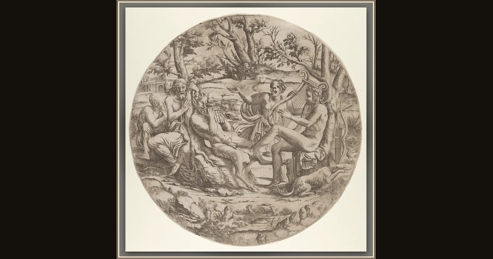

Contest between Apollo and Marsyas
Anonymous, French, School of Fontainebleau, 16th century · ca. 1543 · met
Apollo plays the lyre while the satyr Marsyas holds his pipes, the musical contest behind Socrates’ preference for Apollo and his instruments over Marsyas and his (399e). Explore its place in Plato's Republic, Book III, section 69.